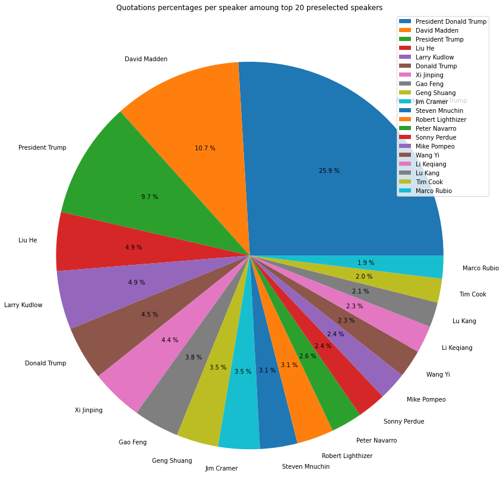
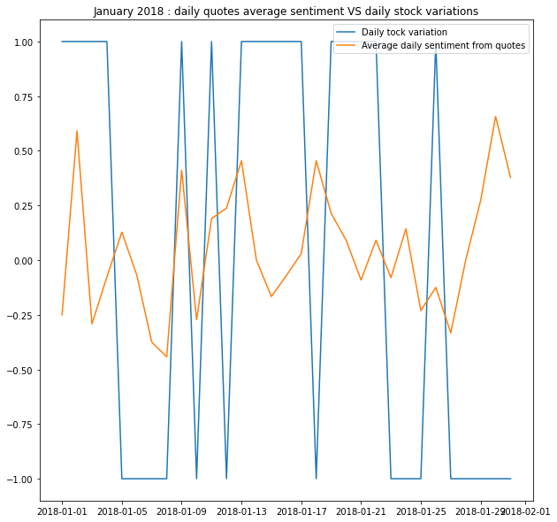
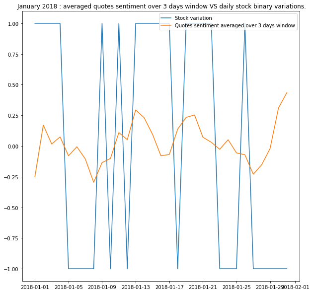
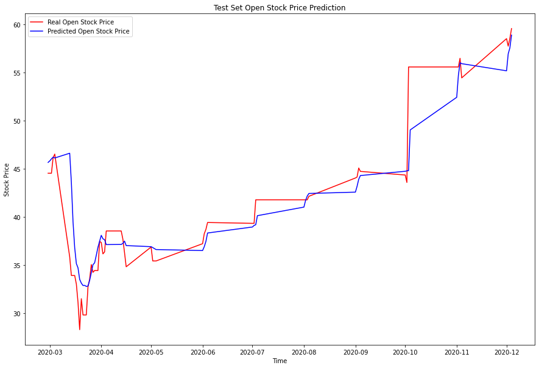

As a candidate for president, Donald Trump denounced denounced the trade relations between United States and China,
“If China does not stop its illegal activities, including its theft of American trade secrets, I will use every
lawful presidential power to remedy trade disputes, including the application of tariffs”
,
he said.
Hence, the US-China trade war began in July 2018, leading to tariffs on some US$550 billion of Chinese goods and
US$185 billion of US goods. Afterwards, the trade conflict seemed to escalate in the Fall of 2019 with new tariff
increases, but at the end of 2019 the two countries agreed on a truce, cancelling some of the announced tariff
increases and rolling back some of the earlier increases in tariffs. The truce led to the so-called Phase One
Agreement signed in January 2020.
Since those two countries have such an influence on the world economy, we can assume that every single political tension related in the press is susceptible to have some repercussions on assets. Thus, we tried to analyze the US VS China trade war around the one million dollar question :
What comes first : the price, or the sentiment?
In order to answer this question, we dived into other questions :
As stated in the introduction, the trade war between the US and China started in January 2018. Hence, we can retrieve quotes from Quotebank from the corresponding period using red flags in the quotations. If you wonder what topics are discussed about trade war, a word cloud is worth a thousand words… We can see that our filtering is effective as the dominant words are trade war related.
We can also wonder who is talking about economical relations between US and China. Within the extracted quote we kept the 20 most popular speakers according to the number of quotations they made regarding US-China trade war. Without any surprises, our little Donald is under the spotlight!
A stock market is the aggregation of buyers and sellers (a loose network of economic transactions, not a physical facility or entity) of stocks (also called shares), which represent ownership claims on businesses; these may include securities listed on a public stock exchange , as well as stock that is only traded privately.
To collect stock data we used yfinance python API. yfinance is a popular open source library developed by Ran Aroussi as a means to access the financial data available on Yahoo Finance.
Yahoo Finance offers an excellent range of market data on stocks, bonds, currencies and cryptocurrencies. It also offers market news, reports and analysis and additionally options and fundamentals data- setting it apart from some of it’s competitors.
Example:
The Dow Jones Industrial Average (DJIA) is a price-weighted average of 30 significant stocks traded on the New York Stock Exchange
(NYSE) and the Nasdaq.The DJIA was
invented by Charles Dow in 1896.
Often referred to as “the Dow,” the DJIA is one of the oldest, single most-watched indices in the world and includes
companies such as the General Electric Company, the Walt Disney Company, Exxon Mobil Corporation and Microsoft
Corporation. When the TV networks say “the market is up today” , they are generally referring to the Dow.
So with DJIA, we now have a reliable way to see how the market fared on a day. What we need now is a way to mine the
public opinion, we turn to quoteBank.
Quotebank provide us trade war-related quotes but now we need to add value to them using sentiment analysis.
As it was mentioned in the introduction, we are looking to find a correlation between the sentiment of
quotes and the actual stock market. Because it’s impossible to look at all the quotes and attribute them with a
discrete/continuous value, the challenge in this part was to apply the correct method to extract sentiment features
from the quotes.
There are several ways for doing this :
One can use a rule-based approach. This method consists in computing the positive or negative
sentiment of each word within a sequence and then averaging this sentiment over the whole sequence.
This way we can compute probabilities for each quote to be positive and negative and even build binary feature.
Textblob sentiment analyzer returns two properties for a given input sentence Polarity is a float that lies between [-1,1], -1 indicates negative sentiment and +1 indicates positive sentiments.
Vader on the other hand is an analyzer that uses a list that can either return a labelled sentiment (Positive/Negative) to the quotation or the return the probability of the quotation being positive or negative.
In addition, to these analyzers we decided to use zero shot bart, which is a ML model trained by facebook. The method works by posing the sequence to be classified as the NLI premise and to construct a hypothesis from each candidate label, it can give probabilities with selected candidate labels.
Now we have all the ingredients to start investigating on the role of quotes as stock variations predictors. The stock dataset features are computed on a daily frequency. In order to match quotations sentiment with the stock features we need to average the quotes sentiment per day. Once this is done, here is a time series of sentiment analysis over the trade war period.

Quotebank dataset provide the number of occurences of each quotes which corresponds to the number of times
the quote has been relayed. We can use this to perform extra weighting when computing the daily sentiment from quotations.
Indeed, we can consider that the more a quote is relayed, the more important it is. That way, we can have an even better insight about the sentiment evolution.
Here is the corresponding weighted sentiment time series.
Our first idea was to focus on a smaller time lapse to get a sense of the correlation between sentiment and stock variation. We considered the month of January 2018, when it all started.
We noticed that the correlation was rather weak, and it seemed that peaks in sentiment and stock variations were alike but shifted in time. This is when we decided to include a memory pattern within quotes’ sentiment. For that purpose, we averaged the quotes sentiment over a time window to contrast previous results. Here for a 3 days window:
We saw an improvement in correlation and decided to build a model that would be able to forecast the stock values using memory aspect, namely a LSTM model.
The idea is to predict the open value of a stock for a given day using stock dataset features and quotes sentiment features using only the previous days information. Here are our results for example for BG stock, we trained on the years 2018 and 2019 and forecasted the open value of stock for the trade war from march 2020.
In order to quantify the improvement when including quotes’ sentiment we computed RMSE in both scenarios i.e. including or not the sentiment features. We got better results when using probabilities for positive and negative labels than binary variables. Here are the improvements of RMSE for each stock dataset when including sentiment features.